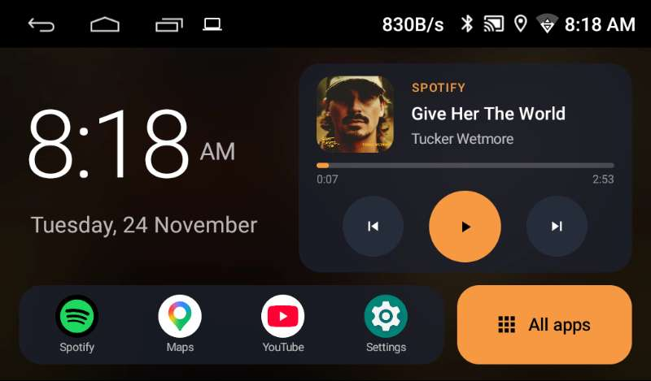
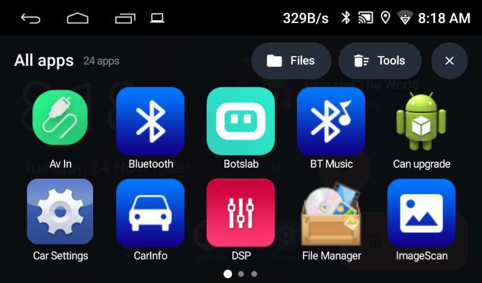
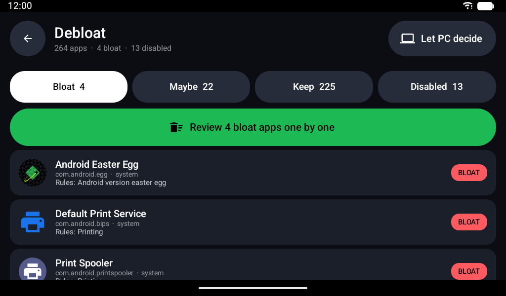
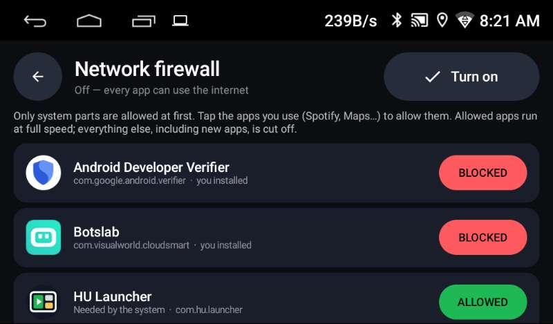
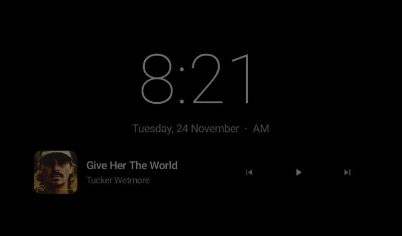
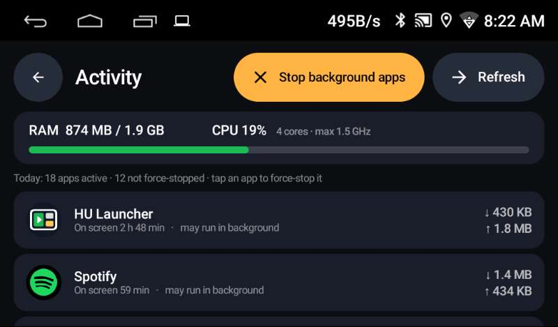
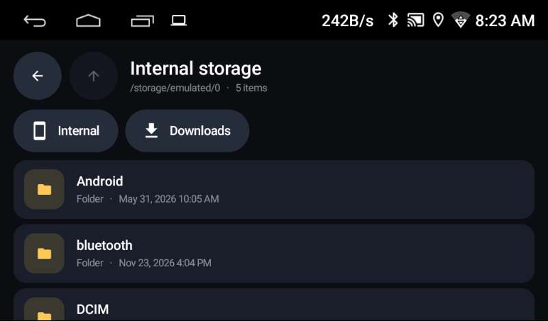

A light home screen, debloater and per-app privacy firewall for no-name Android car stereos and 2-DIN multimedia players, the kind with a MediaTek or Rockchip chip and a 9 or 10 inch screen. No root, no cloud, free and open source.

Screenshots from a real MT8163 head unit (1024×600).
About 0% CPU when idle and around 20 MB of RAM. Large clock, a big now-playing card with album art, and a dock of up to 5 apps.
Pages of 5 × 2 very large icons. Swipe up from anywhere to open it.
Sorts every package into Bloat, Maybe and Keep, then walks you through disabling them one by one, or does it for you.
Apps that can't be disabled are kept stopped in the background, with back-off so they never end up in a restart loop.
A local VPN allow-list. Only the system parts other things depend on are allowed at first; you choose the rest. Allowed apps run at full speed.
Optional: keeps Spotify loaded so music starts instantly and isn't lost when memory runs low.
Optional: an almost black screen with a dim clock and music controls at night, for units that are too bright even at minimum backlight.
Browse internal storage, USB and SD; rename, delete, install APKs, read text files and extract zips.
See the unit's screen in a PC browser and control it over your own Wi-Fi, protected by a PIN.
Made for Claude Code: it reads every app's permissions and services over Wi-Fi and decides what is bloat, because every vendor ships different packages.
Live RAM, CPU and temperature, plus each app's screen time and data use today.
A once-a-day check of GitHub releases, shown only in the notification shade. No sound, no pop-up over your map.






Later updates install from Tools → Check for updates.
No. HU Launcher disables apps through Android's own App info screens, keeps apps that can't be disabled stopped, and blocks internet access per app with a local VPN firewall. None of this needs root.
Many units ship a vendor "speed-up" tool, such as MediaTek DuraSpeed, that kills background apps. HU Launcher can keep such tools stopped, and its optional Keep Spotify ready setting keeps Spotify loaded.
Cheap, unbranded Android car stereos and 2-DIN multimedia players running Android 7 to 9, and newer ones too. It has been tested on a MediaTek MT8163 unit (2 GB RAM, 1024×600) that claims Android 13 but runs Android 9. The layout is checked at 800×480, 1024×600, 1280×720, 1920×720 and portrait 768×1024.
No. Its cautious built-in rules keep anything that looks like car hardware: CAN bus, MCU, radio, Bluetooth, cameras, steering keys and the vendor's core apps. You can still change any choice yourself.
No. Its only internet request is a once-a-day update check against its GitHub releases, which you can turn off. Everything else runs on the unit or on your own PC over your own Wi-Fi.
Yes. It's open source under the MIT licence, with no ads and no tracking.